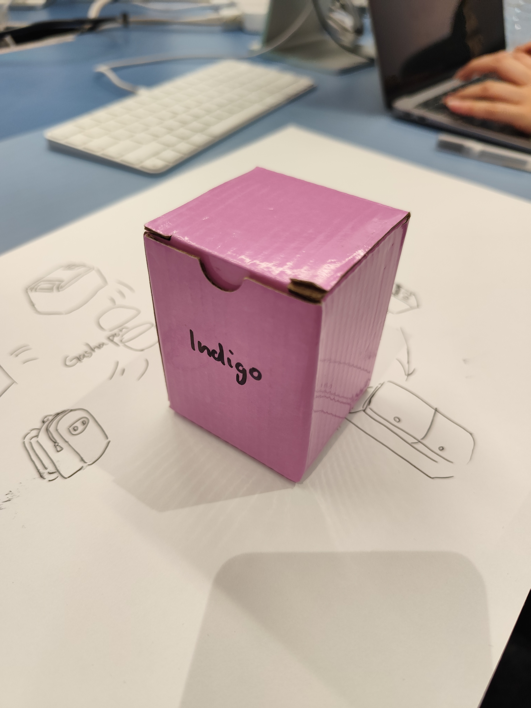

1:Magic box that is both a container and the content.Different container within the container, might appear in different form (dis-assembled, un-installed)
 rdtr01.xl.digital
rdtr01.xl.digital
2. rdtr01.xl.digital connects users to web pages via cameras, showcasing user hand gestures through video. Reflects indicates that web pages, through AI learning and model creation, can now handle complex calculations and simulations.
 mfabiennial2023.risd.gd
mfabiennial2023.risd.gd
3. mfabiennial2023.risd.gd is a unique recreation of The Impermanent Collection from April 14-30, 2023. It transforms the art gallery into a two-dimensional map similar to a 2D console game from the last century, marking "activity areas" so that users can recreate their real-world visit to the art exhibition online.
 text.jodi.org
text.jodi.org
4. text.jodi.org+ is a webpage composed of gibberish, presented in a manner similar to how the Integer Overflow event in a last-generation console game causes unexpected duplicate characters to appear.
Amidst the chaotic gibberish, each page retains a semblance of order, suggesting that while one component of the program may have malfunctioned, others continued to function.